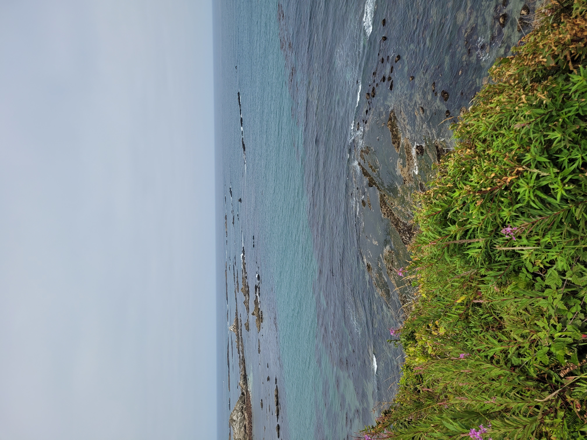

This piece overlooks a cave of sea lions on the coast. Sea lions are intelligen, playful, and they have a noisy bark. They have large flippers that they use to "walk" on the land. The population has been growing, and there are now about 200,000 on the Pacific coast! Add this to your collection to add the coast line and the sea lion habitat to a beautiful display in your home!